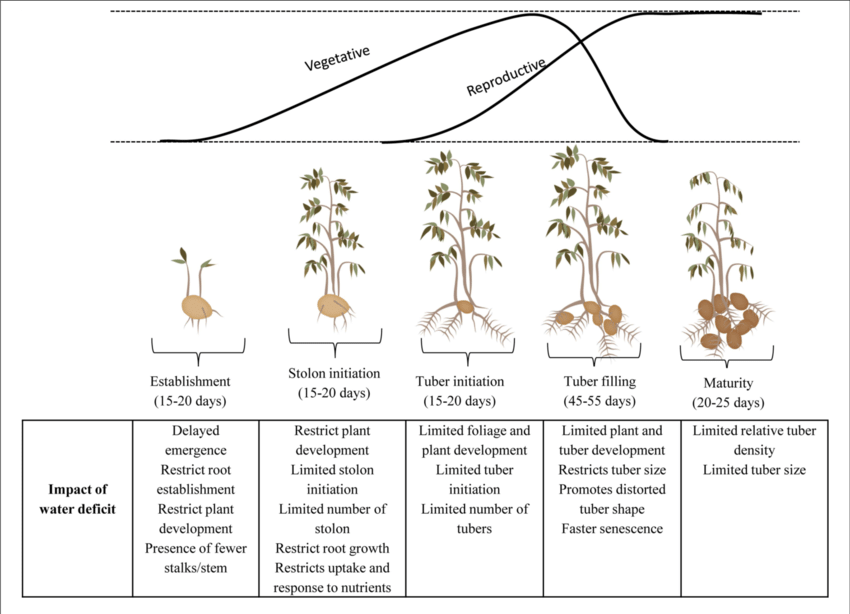

Potato farming guide for beginners. Potato crop is one of the most profitable short-term agriculture crop. Potato growing is a good, viable business and one can make a huge profit from potato cultivation. Learn how to grow potatoes in India.
Climate and Temperature for Potato Farming: Being a cool season crop, the best place for potato farming are places with a cool climate, fertile soil and good moisture. Temperature, light, soil type, moisture content and nutrients influence the growth of potatoes in a great way. Tubers stop developing at a temperature above 30⁰C. This is because, as the temperature increases, the rate of respiration increases. In the process, carbohydrates produced through photosynthesis get consumed instead of getting stored in the tubers. Thus, tuber formation gets affected at higher temperature. Soil temperature of 17-19⁰C is ideal for potato tuber formation. Bright sunshine during day and cool nights are optimal for potato growing.
Season for Potato Farming: Being a rabi season crop, it is usually cultivated during the months from October to December. This is the time when the weather is neither hot nor cold. Since the monsoons are nearly over at this time, it is an ideal time for cultivating potato crop.
Soil for Potato Cultivation : Potato tubers require ample amount of air and water. In addition they need space underground to expand and swell in size as they grow. Therefore, a loose, loamy soil is optimal. Clayey soil keeps the water and air from reaching the roots. In addition, since they stick a lot the tuber growth gets restricted.
pH Required for Potato Growing: Soil pH must be maintained between 4.8 and 5.4. It is on a slightly acidic side to promote carbohydrate formation and storage in tubers.
Water for Potato Farming: For potato, the daily crop water requirement is 4-5mm a day. For a better yield, irrigation must be done immediately after sowing. This allows for proper seed germination. On an average, they need 4-5 mm water per day- just enough to maintain the moisture level, temperature and thus promote uniform tuber formation. The last lot of irrigation is done about fifteen days prior to harvesting. This promotes hardening of tuber skin before harvesting potatoes